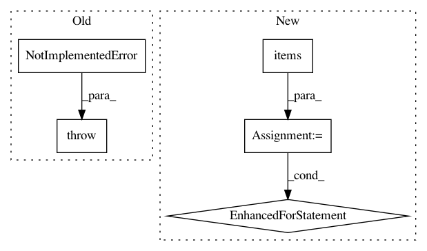

152ecd0f74d01275cded6d9d0d7cca7905bc7f33,dino/storage/cassandra.py,CassandraStorage,add_acls,#CassandraStorage#Any#Any#,51
Before Change
raise NotImplementedError()
def add_acls(self, room_id: str, acls: dict) -> None:
raise NotImplementedError()
def get_acls(self, room_id: str) -> list:
raise NotImplementedError()
After Change
def add_acls(self, room_id: str, acls: dict) -> None:
current_acls = self.get_acls(room_id)
for acl_type, acl_value in acls.items():
current_acls[acl_type] = acl_value
self.driver.acl_insert(room_id, current_acls)
def get_acls(self, room_id: str) -> dict:
rows = self.driver.acl_select(room_id)
In pattern: SUPERPATTERN
Frequency: 3
Non-data size: 5
Instances
Project Name: thenetcircle/dino
Commit Name: 152ecd0f74d01275cded6d9d0d7cca7905bc7f33
Time: 2016-10-11
Author: scorch@stink
File Name: dino/storage/cassandra.py
Class Name: CassandraStorage
Method Name: add_acls
Project Name: matplotlib/matplotlib
Commit Name: 921e945d6f1f33897692379a2ad2ed2b9f1a3ef1
Time: 2021-01-17
Author: anntzer.lee@gmail.com
File Name: lib/matplotlib/transforms.py
Class Name: TransformNode
Method Name: __copy__
Project Name: thenetcircle/dino
Commit Name: 46ad858e7284a026c02fff43146f2ec422d3449e
Time: 2016-10-25
Author: oscar.eriks@gmail.com
File Name: dino/db/redis.py
Class Name: DatabaseRedis
Method Name: get_acls_channel